Lab0: Login Server From Windows
Terminal Emulator
Download
PieTTY
/
PuTTY
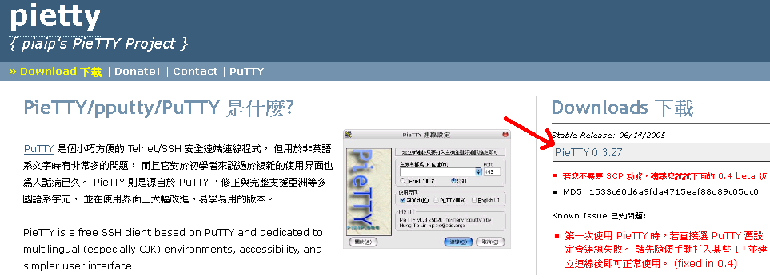
Xwindow Server
Download and Install Xming X Server.
Get Xming and Xming-fonts form website.
- Download Xming
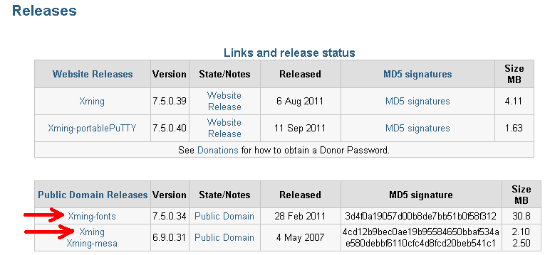
- Install Xming
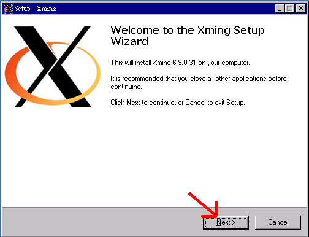
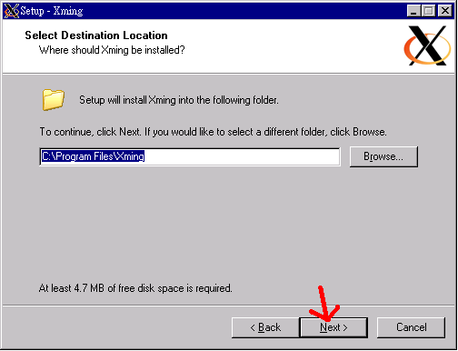
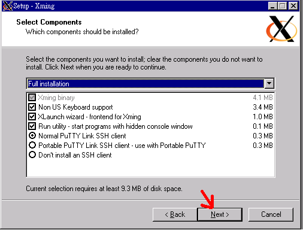
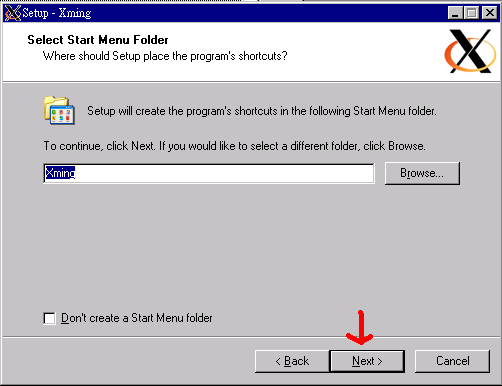
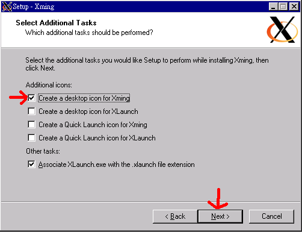
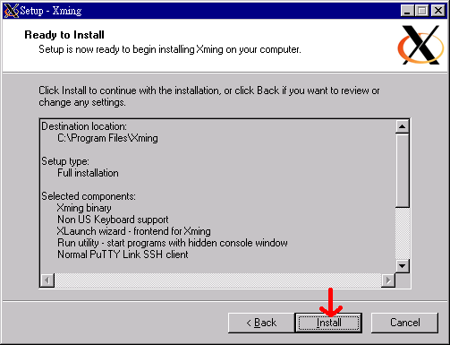
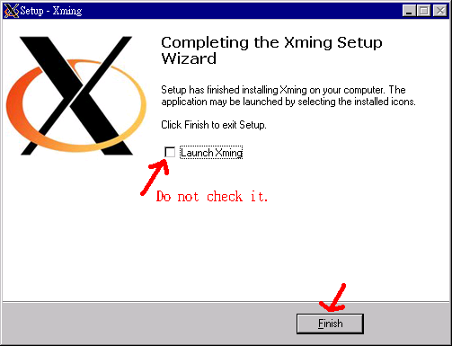
- Install Xming-fonts
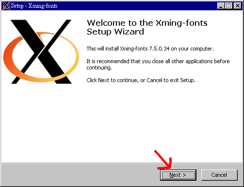
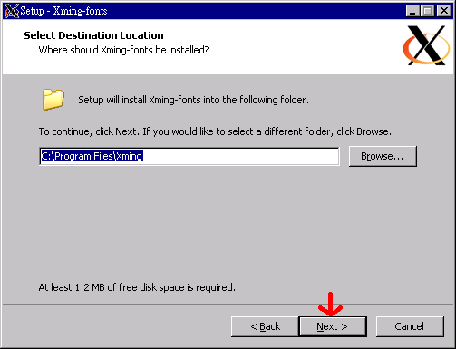
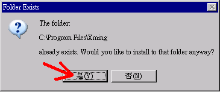
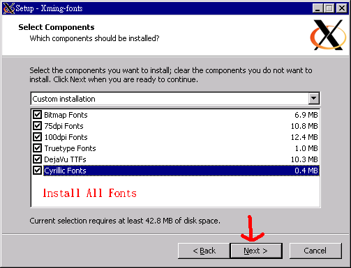
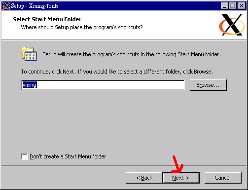
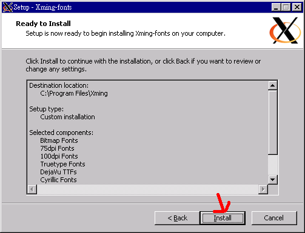
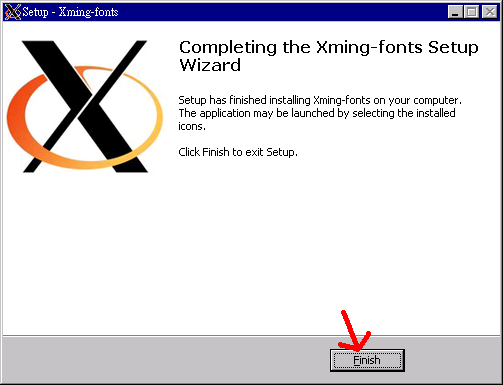
- Configure PieTTY/PuTTY
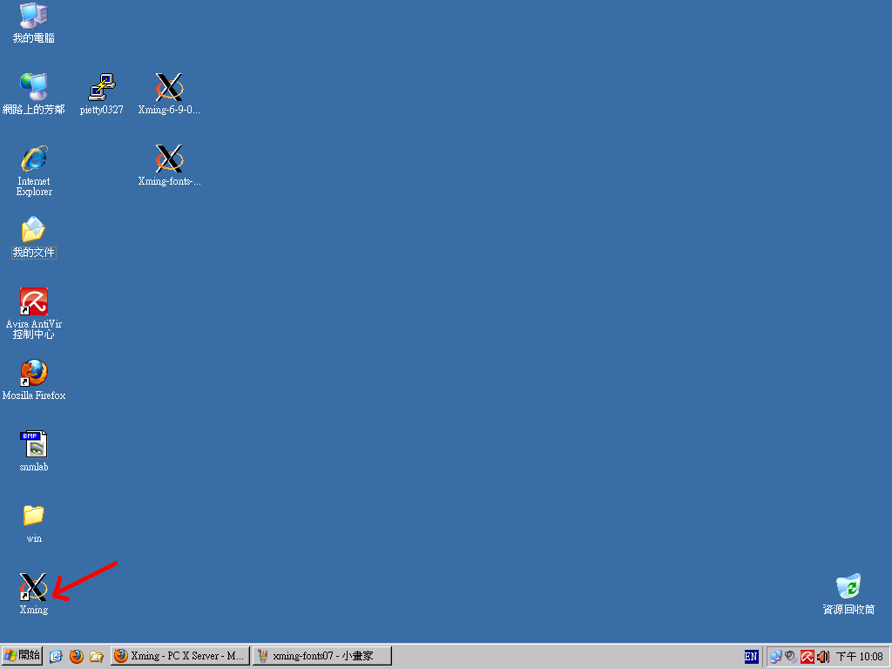
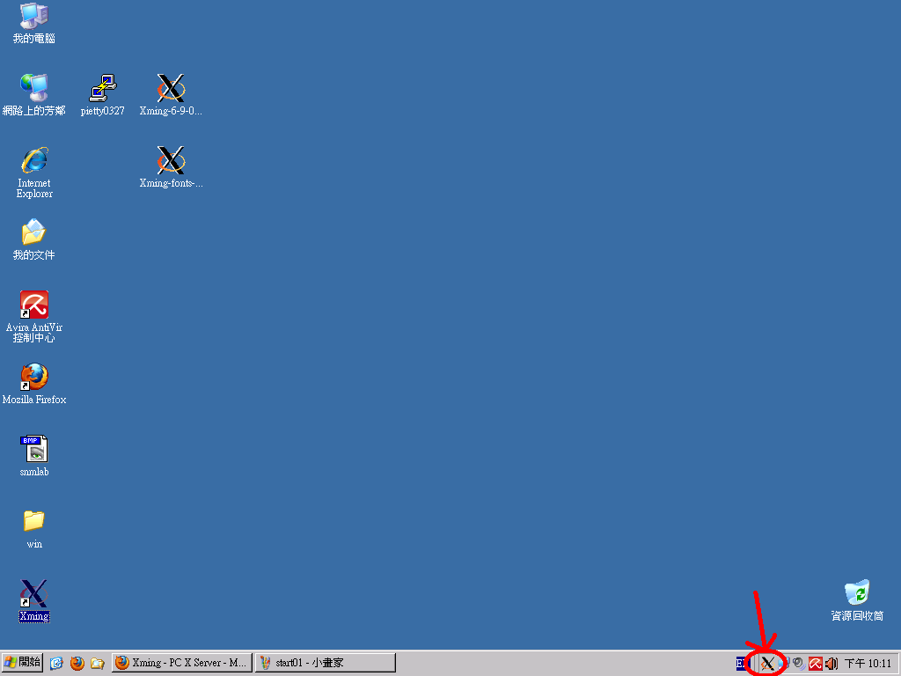
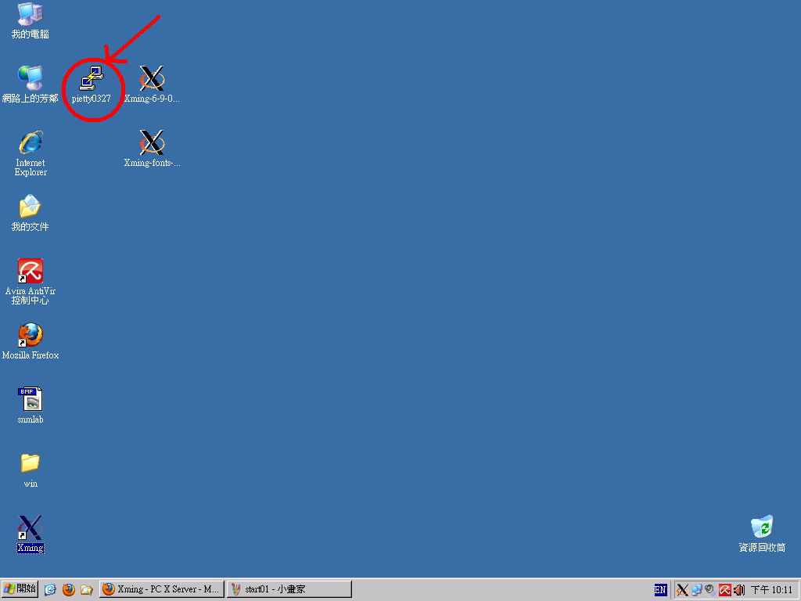
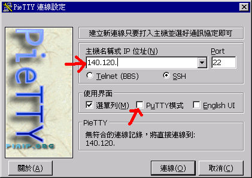
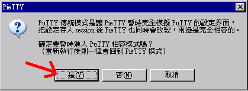
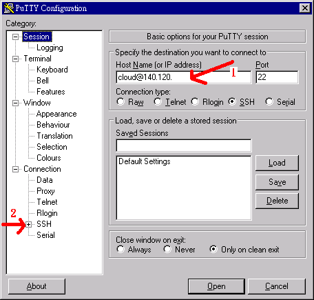
localhost:0
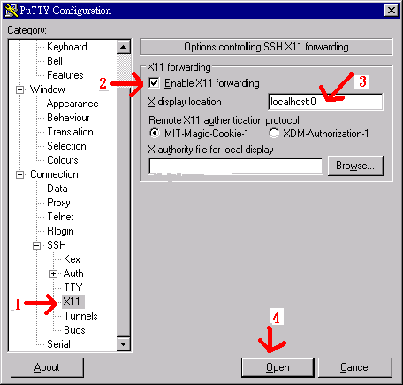
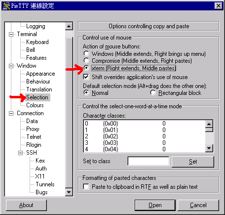

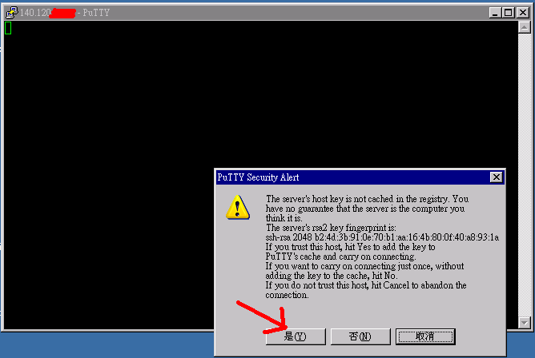
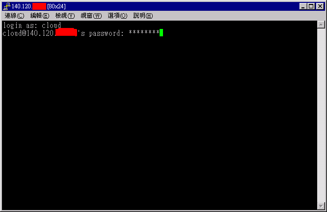
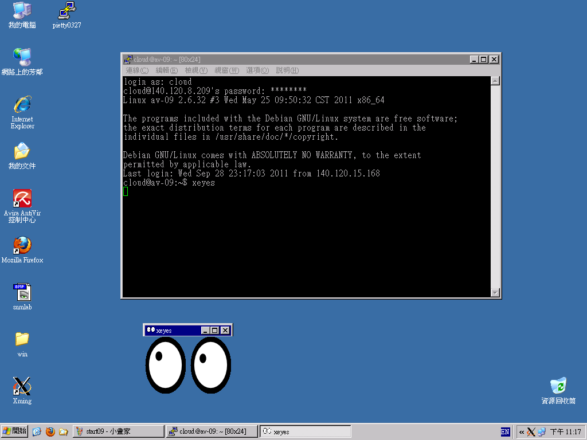
ChiSheng Su